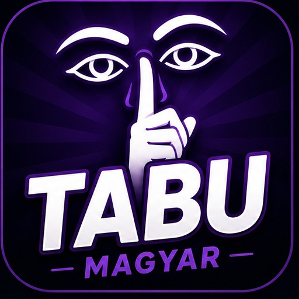

PIZZA
TILOS KIMONDANI

Magyar szójáték baráti társaságoknak
A játékosok automatikusan sorra kerülnek, mindenki ugyanannyiszor magyaráz.
TILOS KIMONDANI
Juttasd el a csapattársaidhoz a feladványszót úgy, hogy közben nem mondhatod ki a kártyán szereplő tiltott szavakat.
A két csapat felváltva játszik. Az egyik csapat játékosa a magyarázó, a csapattársai tippelnek, az ellenfél pedig figyeli a kártyát és a szabályok betartását.
✓ Kitalált szó: +1 pont a magyarázó csapatnak.
⏭ Passz: −1 pont a magyarázó csapatnak, és +1 pont az ellenfélnek.
🚨 TABU: −1 pont a magyarázó csapatnak, és +1 pont az ellenfélnek.
Ez a klasszikus Hasbro Tabu pontozási logikája: a passzolt vagy „lebuktatott” kártyák után az ellenfél kapja a pontot.
A tiltott szavak bármely alakja sem használható. Tilos továbbá a feladványszó egyértelmű részeinek, kezdőbetűinek, rímének vagy „úgy hangzik, mint” típusú utalásnak a használata.
A kör a beállított idő leteltéig tart. A jelenlegi appverzióban a körök száma külön beállítható; ez az app egyszerűsítése a klasszikus játékmenethez.
A beállítások automatikusan mentésre kerülnek.